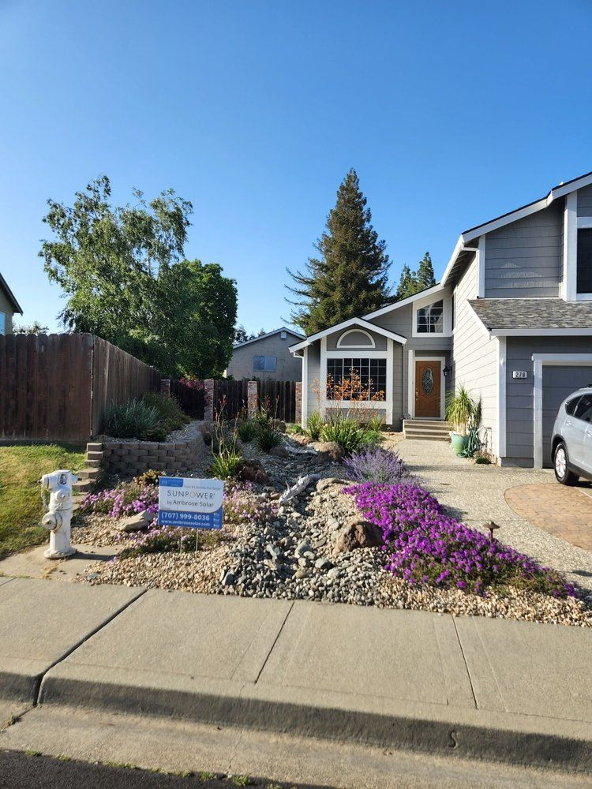
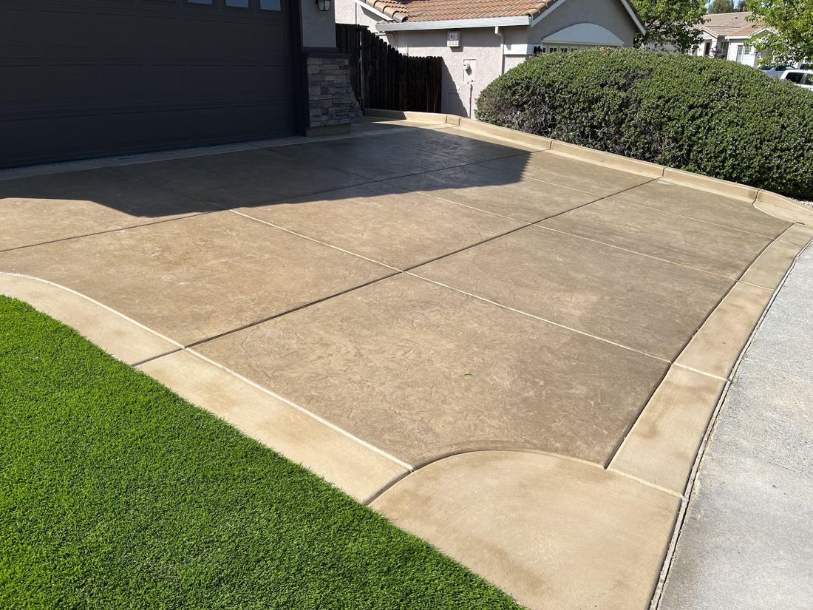
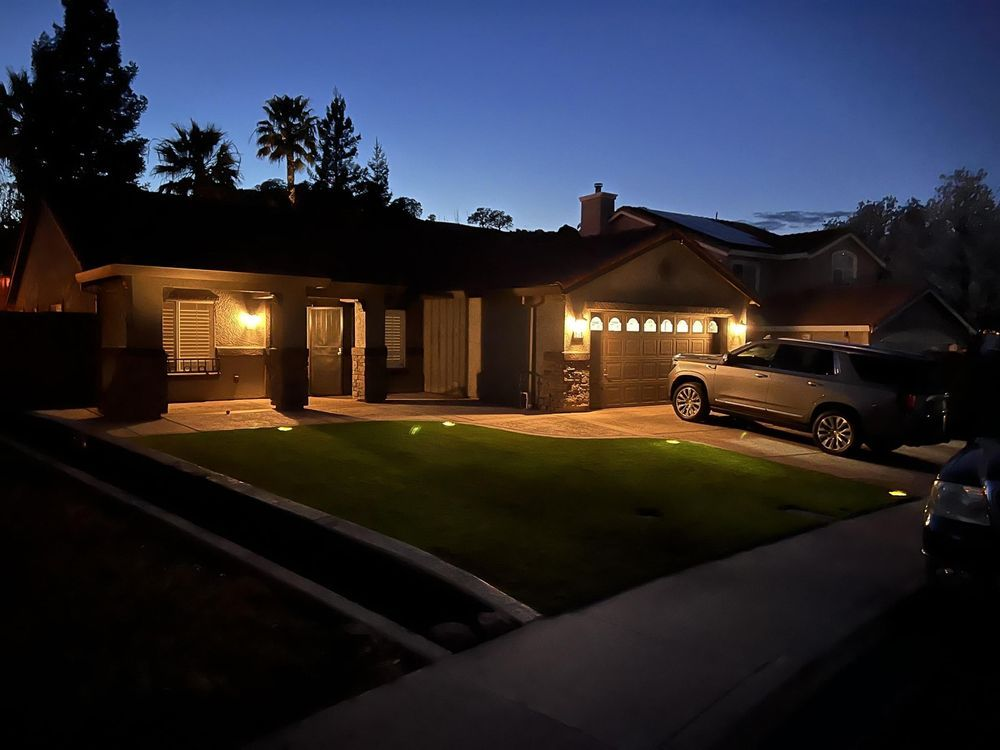
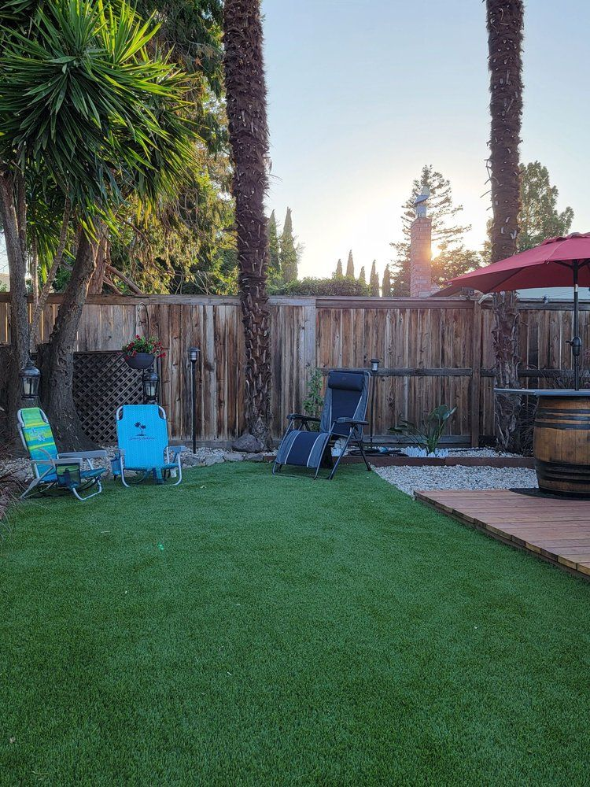
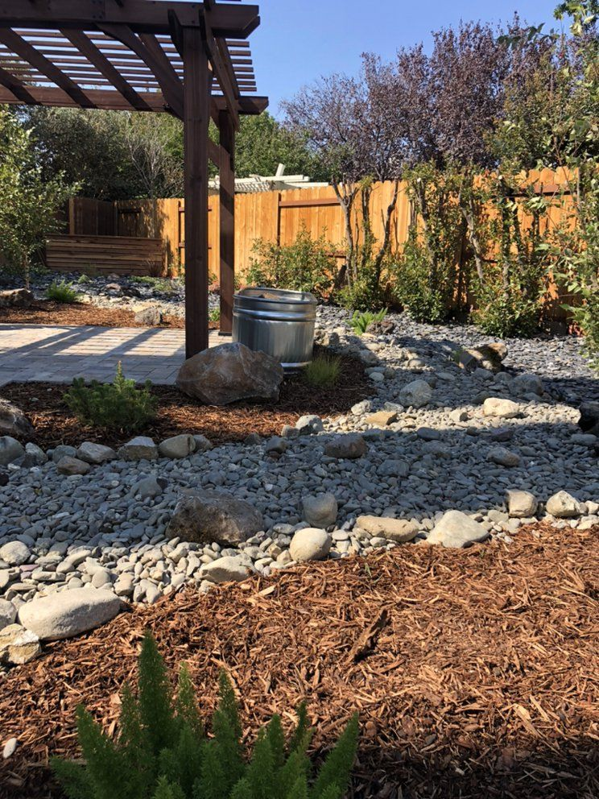
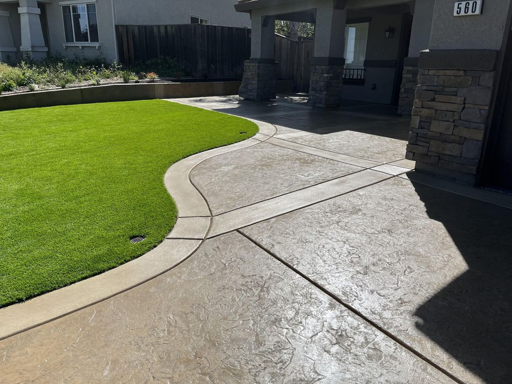
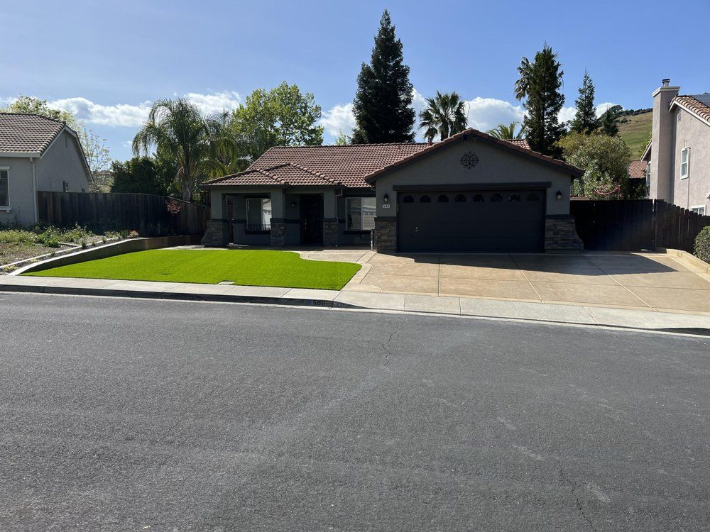
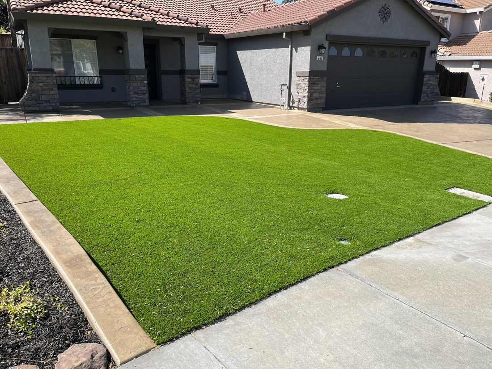

Landscape design
Help refining your ideas, with design suggestions you may not have considered.
Yelp categories
Landscaping · Vacaville & Dixon
Front and backyard transformations: artificial turf, pavers, irrigation, plants and drought-tolerant designs by Nick and his crew.
The crew
Vizcay Landscaping is a landscape contractor based in Vacaville, serving Vacaville, Dixon and the surrounding Solano County area. Nick Vizcay and his crew handle full front and backyard projects, from demolition and concrete removal through pavers, irrigation, turf, plants and bark.
Customers on Yelp give the company 5 stars across 58 reviews, praising great communication, on-time crews, valuable design input and yards left clean and debris-free at the end of each day.

Services
Help refining your ideas, with design suggestions you may not have considered.
Yelp categories
Turf for front yards, backyards and dog runs.
Yelp categories
Yelp categories
Paver patios and walkways.
Yelp categories
Yelp categories
Including drought-resistant landscapes.
Yelp categories
Demolition and removal of old concrete, lawn and plants, then the new build.
Mentioned in customer reviews
A reviewer's tip: if Nick suggests adding lighting, don't hesitate.
Mentioned in customer reviews
Every yard is different, so there's no posted price list. Call (707) 590-0660 for a quote.
Good to know
Gallery







Photos from the company's public business listings.
Reviews
Yelp rating and count as shown on Yelp's listing via Yahoo Local (Oct 2026): 57 five-star reviews and one one-star review.
“If I could give Nick 100 Five-star ratings I would! He is kind, helpful, creative, hard-working and always shows up in an emergency ( like a missing broken valve that the previous owner buried in a mystery location in our yard!) He installed our landscaping in both our front and back yards. They are so stunning that neighbors walking their dogs stop to tell us they purposely walk down our street so they can see our yard. (BTW if Nick suggests adding lighting... don't hesitate!)”
“Nick and his crew recently redid our entire backyard landscaping, from the demolition and removal of existing concrete, lawn, and plants, through the installation of pavers, plants, bark,...”
“My yard is beautiful. It's just what I wanted. Viscay Landscaping can be characterized by excellence, trust, and timeliness. Very responsive to ideas and requests. Nick Viscay and his crew and subcontractors were all very professional, polite, and effective. I highly recommend him.”
“Vizcay Landscaping did an amazing job at transforming our weed ridden front yard (knee high weeds after the rain) into a beautiful drought resistant landscape. The "before" picture is actually...”
“Nick and his team did an amazing job! Great communication back and forth with quality service. They went the extra mile on our turf job and left the yard clean and debris free each day. I highly...”
“I recently had the pleasure of working with Vizcay Landscaping for a major landscaping project, and I cannot recommend them highly enough! From the moment I reached out, their team was incredibly fast and responsive, setting the tone for a truly exceptional experience. Everyday they arrived on time, fully equipped, and ready to tackle the job. Their team communicated with me every step of the way, ensuring I was informed and comfortable with the progress. It's clear that they value their customers! One of the standout aspects of this company was the valuable input they provided. They helped me refine my initial ideas, suggesting designs that I had not considered...”
“I will say that working with Nick was probably one of my best experiences with a "contractor" and owner. He and his crew was always on time, professional and very reliable. Nick was also quick and...”
“Recently we just completed a full front and backyard renovation with Vizcay Landscaping. It was an absolute pleasure to work with Nick and his whole team throughout the process. We called at...”
Quoted word for word from public Yelp and BestProsInTown reviews. Yelp text is as shown on Yelp-powered listings (MapQuest/Yahoo), which shorten longer reviews (“...”).
FAQ
Vacaville and Dixon in Solano County.
Landscape design, artificial turf, lawn and grass installation, pavers, irrigation, plants and bark, through to full front and backyard renovations that start with removing old concrete, lawn and plants.
Yes. Reviewers describe front yards transformed into drought-resistant landscapes.
Call (707) 590-0660, Monday–Friday 7 AM–7 PM.
Reviewers work directly with Nick Vizcay and his crew, and say communication is great from start to finish.
Service area
| Monday | 7 AM – 7 PM |
| Tuesday | 7 AM – 7 PM |
| Wednesday | 7 AM – 7 PM |
| Thursday | 7 AM – 7 PM |
| Friday | 7 AM – 7 PM |
| Saturday | Closed |
| Sunday | Closed |
Call for a quote. Service-area business, no storefront.
Call Nick's team at (707) 590-0660 to talk through your project.
Call for a quote